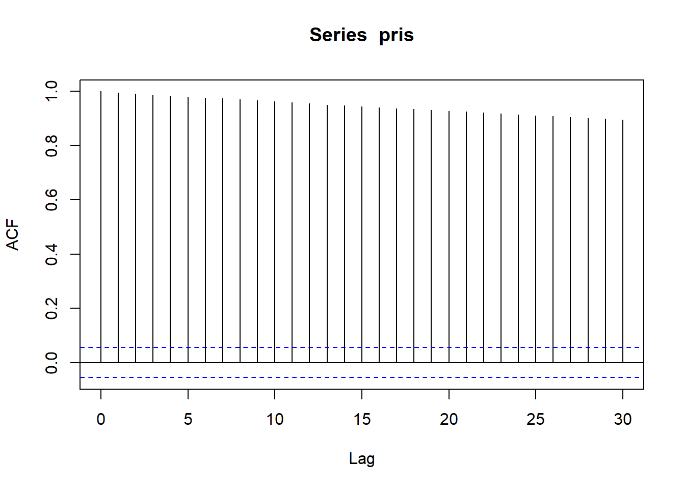
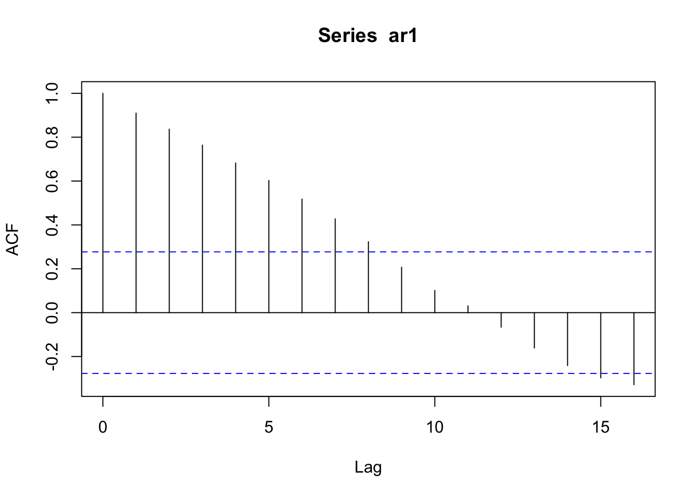
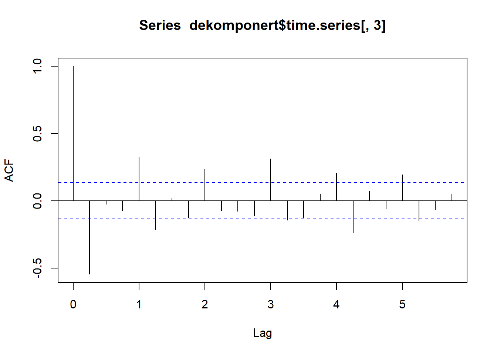
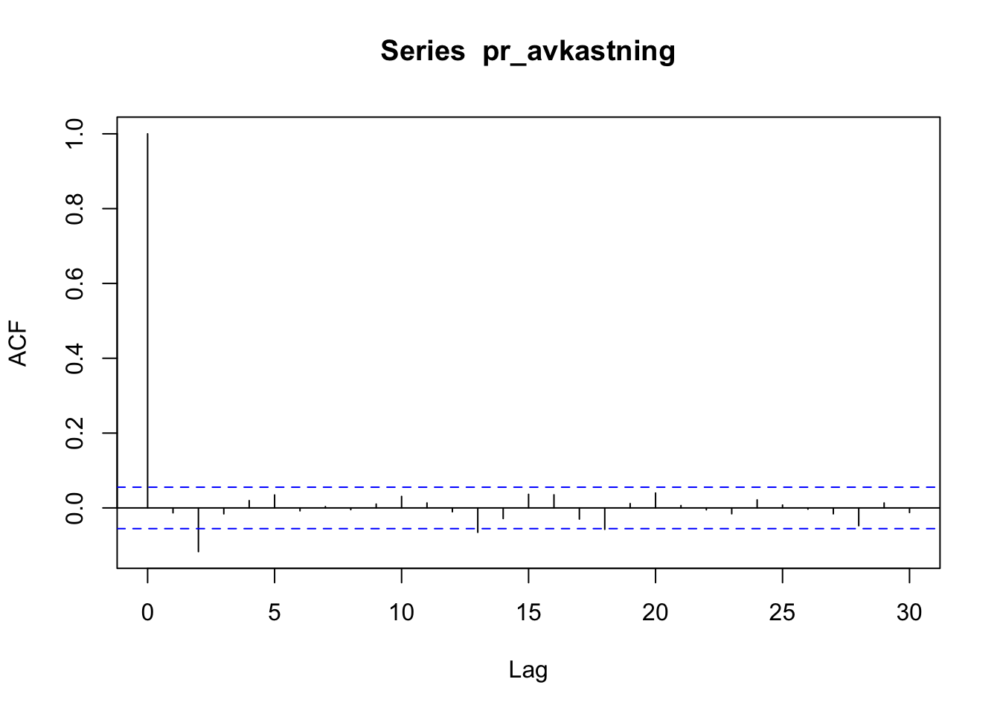
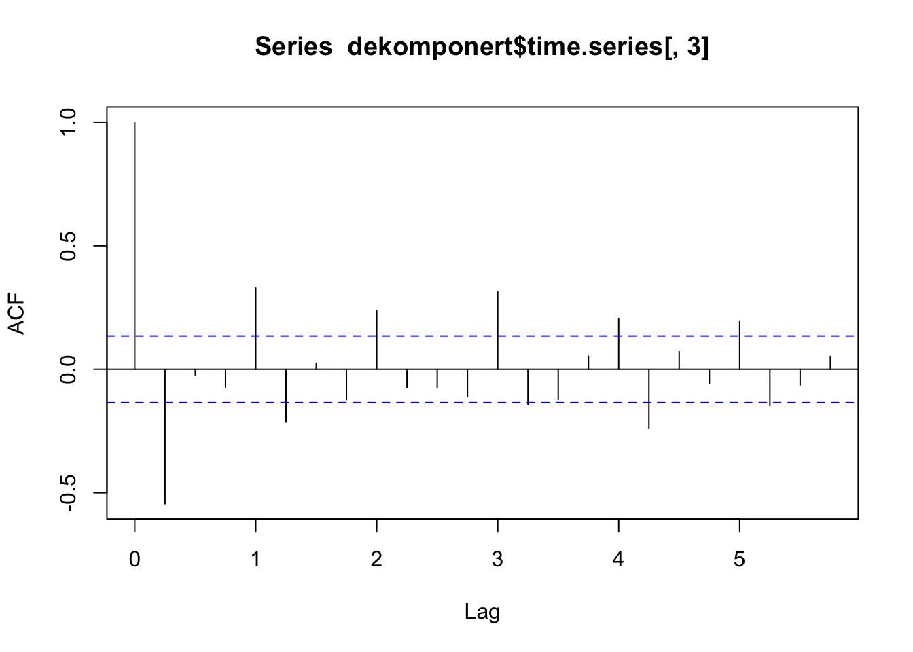

5.5 Autokorrelasjon
5.5.1 Kontrollspørsmål/Diskusjonsspørsmål
- Formuler med egne ord: Hva er autokorrelasjon?
- Hva kan vi lære ved å se på autokorrelasjonsplottet til en tidsrekke?
- Kan du komme på noe vi ikke kan finne ut av ved å se på korrelasjoneplottet til en tidsrekke?
5.5.2 R-øving
1. Utregning av ACF I R bruker vi funsksjonen acf() til å lage autokorrelasjonsplott. La oss i første omgang gjenskape noen av figurene fra videoen ved hjelp av simuleringer. For eksempel kan vi laget til to tidsrekker som på forrige oppgavesett, en hvit støy og en AR(1):
n <- 50
hvit_støy <- rnorm(n)
ar1 <- arima.sim(model = list(ar = 0.95), n)Autokorrelasjonsplottene til disse to tidsrekkene kan vi få frem ved å anvende acf()-funksjonen på dem:
acf(hvit_støy)
acf(ar1)
Vi ser igjen mønsteret fra videoen: Hvit støy består av ukorrelerte observasjoner, mens AR(1)-modellen består av observasjoner som bygger på forrige observasjon, slik at det er en viss korrelasjon, og dermed avhengighet fra dag til dag. Det ser vi igjen i autokorrelasjonsplottet som gir tydelig utslag, og der korrelasjonen går gradvis mot null med økende avstand mellom observasjonene.
2. ACF som sjekk av modell En sjekk vi gjerne gjør for å se om en estimert tidsrekkemodell passer dataene våre, er å se autokorrelasjonen til residualene i modellen er liten. Det betyr nemlig at modellen plukker opp den (lineære) avhengigheten i tidsrekken. For en AR(1) modell er residualene f.eks gitt ved \(\hat{u}_t = Y_t - \hat{\phi}Y_{t-1}\), men disse er tilgjengelig direkte fra modell estimeringen i R:
library(forecast)
ar1_estimat <- Arima(ar1, order = c(1, 0, 0))
acf(ar1_estimat$residuals)
3. Oppgave: Prøv nå å plotte autokorrelasjonsfunksjonen for for følgende tre tidsrekker, og knytt en kort kommentar til hver av dem om hva du lærer om tidsrekken ved å se på autokorrelasjonsplottet til:
- Prisen på Equinor-aksjen, som vi jobbet med i det første oppgavesettet.
Løsning
library(readxl)
equinor <- read_excel("equinor.xlsx")
pris <- rev(equinor$Siste)
acf(pris)Vi ser at det er høy positiv autokorrelasjon selv for store avstander (lag). En lav pris (historisk sett) vil være assosiert med lave priser de foregående dagene og tilsvarende for høye priser. Dette stemmer bra med teorien med at dersom markedet er effisient (ikke pensum, slapp av!) skal prisen følge en tilfeldig gang, selv om dette ikke alltid er tilfellet. Det kan altså se ut til at prisen idag er tilnærmet prisen i går pluss ny støy.
- Equinoraksjens prosentvise avkastning (som er tilnærmet lik
diff(log(pris))fra dag til dag.
Løsning
pr_avkastning <- diff(log(pris)))
acf(pr_avkastning)
Her ser vi at autokorrelasjon er svært lav uansett lag. Det virker altså ikke å være noen lineær sammenheng mellom avkastningen fra en dag til den neste (og den om 2, 3, .. dagen). Dette stemmer bra med at prisen i teorien skal følge en tilfeldig gang og at det i et effisient marked ikke skal gå an å predikere avkastningen for en aksje, noe som i teorien hadde vært mulige hadde det vært en positiv autokorrelasjon.
- Tidsrekken som er igjen etter at du fjernet trend og sesong fra ølproduksjonstidsrekken i det andre oppgavesettet.
Løsning
library(fpp)
library(forecast)
dekomponert <- stl(ausbeer, s.window = "periodic")
acf(dekomponert$time.series[ ,3], na.action = na.pass)
Figuren er litt misvisende siden ett lag i figuren svarer til ett år, og siden vi har kvartalsvise observasjoner har vi 4 acf verdier per år. Det kan se ut til at det er en årlig sesongvariasjon som ikke har blitt dekomponert fullt ut av tidsrekken pga av disse toppene i acf som kommer 1,2,3. .. året.Til slutt: husk at også autokorrelasjonsplottene må pyntes og ordnes på hvis vi skal vise dem til andre i rapporter, innleveringer etc. Du kan stort sett bruke de samme argumetene som i vanlige plott: xlab =, ylab =, main = osv.